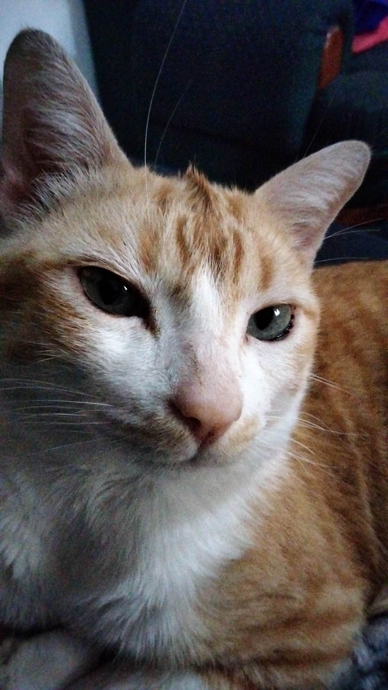

Mi gato
Jaime Felipe Villavicencio Marqués de Jujuy y niño de la condesa es mi gato naranja, al que adopté junto con mi ex novio. Era el más pequeño y llorón de su camada, y lo encontré en una veterinaria cuando iba rumbo a mi antiguo trabajo. Desde una calle de distancia escuché sus maullidos y supe que tenía que llevarlo a casa. Aunque su pelaje estaba enredado y su cuerpo se veía frágil, desde el primer día dejó claro que prefería dormir conmigo en lugar de la caja de tenis que le había preparado.
Sus mejores fotos
Jaime es un gato muy tranquilo y hogareño.
Le encanta dormir en la cama, pero cuando hay sol, lo encontrarás sentado buscando cada rayo de luz. Es más activo por las noches, rondando la casa como una pequeña sombra, y aunque adora que le cepillen el pelaje, odia que le toquen la barriga. Sus grandes ojos parecen siempre juzgar todo lo que sucede a su alrededor.
 Tiene una gran cantidad de apodos, como Felipillo, Jaime el duende, gato panzón y michiwero y responde a todos con su particular elegancia felina.
Tiene una gran cantidad de apodos, como Felipillo, Jaime el duende, gato panzón y michiwero y responde a todos con su particular elegancia felina.
Mi teléfono está lleno de fotos donde aparece en poses graciosas o con expresiones únicas, como si supiera que le estoy tomando una foto. Además, Jaime tiene su forma especial de despertarme: cada mañana me da pequeños topes en la cara con su frente para que me levante.
Durante mis clases en línea, Jaime fue mi fiel compañero. Siempre se acomodaba a mi lado mientras trabajaba en mis proyectos, y en algunos videos de la universidad incluso aparece en el fondo.
Cuando tardo en irme a dormir, él no se queda tranquilo y me maúlla hasta que me acuesto.
Jaime es mucho más que una mascota, es un compañero constante en mi vida que siempre está presente en los momentos más importantes.
Meme que me recuerda a Jaime
Jaime tiene una personalidad única y encantadora. Es un gato tranquilo y reservado, pero al mismo tiempo muy observador y curioso. No es el típico gato que busca llamar la atención todo el tiempo, pero cuando lo hace, es de manera sutil, casi elegante. Le gusta estar cerca, siempre presente pero sin invadir. Su forma de mostrar afecto es silenciosa pero profunda, como cuando se acurruca a mi lado mientras trabajo o cuando me despierta por las mañanas con esos suaves topes en la frente.

Jaime
Una de las cosas que más disfruto es observar a Jaime mientras duerme. Tiene la habilidad de encontrar los rincones más acogedores de la casa, y cada vez que lo veo acurrucado bajo el sol en el jardín, parece completamente en paz. Su amor por el calor y la luz siempre me hace sonreír, como si estuviera absorbiendo toda la energía positiva del ambiente.
Jaime juzgador
A pesar de su calma, Jaime tiene sus momentos juguetones, especialmente por las noches, cuando recorre la casa con sigilo como si estuviera explorando cada rincón. Es inteligente y tiene una especie de “mirada de juicio” que siempre me hace reír; parece que todo lo que sucede a su alrededor lo analiza detenidamente. Aunque no le gusta que le toquen la barriga, adora que le cepillen el pelaje, y esa es una de las pocas maneras en que muestra total relajación, dejando de lado su actitud un poco distante.
